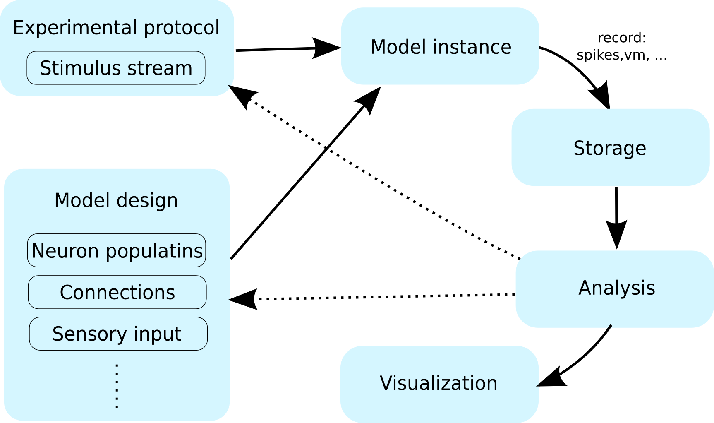
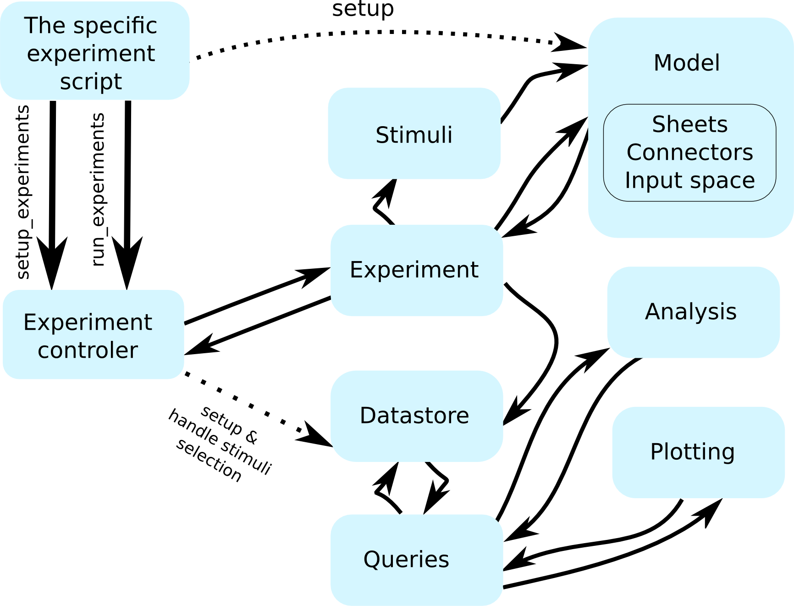

ozaik: a framework for model construction, simulation, data analysis and visualization for large-scale spiking neural models
Ján Antolík,Andrew P. Davison
Unité de Neurosciences, Information et Complexité(UNIC), Centre Nationale de la Recherche Scientifique (CNRS), Gif sur Yvette, France
Motivation

A typical neural simulation workflow.
The increasing amount of computational resources becoming available is causing a shift towards increasingly heterogeneous models of neural circuits and brain regions, and employment of increasingly complex stimulation and experimental protocols in an effort to bridge the gap between simulations and biological experiments. This poses a challenge for the existing tool-chains, as the set of tools that are involved in the typical modeler's workflow is expanding, with a growing amount and complexity of meta-data, describing the experimental context, flowing between them. A plethora of tools is currently available covering different parts of the workflow; however, numerous areas lack dedicated tools, while integration and interoperability of existing tools is limited. This forces modelers to either handle the workflow manually, leading to errors, or to write substantial amounts of code to automate parts of the workflow, in both cases hindering their productivity.
To address these issues, we have developed mozaik: an integrated workflow system for spiking neuronal network simulations written in Python. mozaik integrates the model, experiment and stimulation specification, simulation execution, data storage, data analysis and visualization into a single automated workflow, ensuring that all relevant meta-data are available to each of the workflow components. It is based on several widely used Python tools, including PyNN Davison et al. (2009), Neo Davison et al. (2011) and Matplotlib Hunter et al. (2007).
Architecture

The flow of control between main mozaik components during the workflowmozaik is a high level object-oriented python library. It is organized in a number of sub-packages that match the steps of a workflow:
mozaik - the core mozaik API
sheets - a population of neurons distributed in space - basic building block of mozaik models
connectors - a projection between two sheets of neurons - basic building block of mozaik models
models - an API encapsulating a mozaik model
experiments` - an API for defining a experimental paradigm
storage - the data storage and manipulation API
analysis - an API for analysis of recorded data
visualization - an API for visualization of recorded data and analysis results
meta-workflow - an API for workflows involving multiple simulation instances such as parameter searches
tools - various utility functions
It is our hope that some of these sub-packages will be in future either replaced with dedicated third party tools, or will be
forked out of mozaik into fully autonomous packages.
Model specification
Here we will show a minimalist example, demonstrating the most important steps in setting up a simple
randomly connected network of excitatory and inhibitory neurons.
The model can be specified via a configuration file(s). The top level file specifies references to
files containing configuration of individual layers, and several high-level parameters, such as what input space
and layer will be used by the model (in our case none) or where to store results.
This tells mozaik to record from 21 randomly picked neurons in the Exc_Layer the spikes, membrane potential and conductances.
References
Davison AP, Brizzi T, Estebanez L, Jaillet F, Mahnoun Y, Rautenberg P, Sobolev A, Wachtler T, Yger P, Garcia S (2011) Neo: representing and manipulating electrophysiology data in Python. Proceedings of EuroSciPy 2011. http://pythonneuro.sciencesconf.org/903
Davison AP, Brüderle D, Eppler JM, Kremkow J, Muller E, Pecevski DA, Perrinet L and Yger P (2009) PyNN: a common interface for neuronal network simulators. Front. Neuroinform. 2:11
Hunter JD (2007) Matplotlib: A 2D graphics environment. Computing In Science & Engineering 9:3
Stimulation protocol and data storage
Experiments and execution
The list of experiments is declared in a separate method as follows. In our case all we do is initially give external input to the network, and then let the network run while recording its activity.
During execution the recorded data are stored in the central data-store, which is saved for future access by the analysis and visualization components.
Data handling
An important concept in mozaik is a data-store view (DSV) - a proxy instance of a datastore that
allows expressing any subset of the data-store without copying data in memory. Together with the
accompanying query module, this allows for powerful manipulation of data in the data-store.
Following query returns a DSV with data (recordings or analysis data structures)
associated only with sheet V1_Exc_L4:
while the following one filters data structures that declare parameter named value_name
with value AfferentOrientation belonging to any of the listed sheets:
Finally the following query filters all recordings or analysis data structures assoicated with stimulus FullfieldSinusoidalGrating
of horizontal (0) orientation:
mozaik offers a number of other query methods providing more complex data manipulation such as collation of data with respect to selected parameters.
Analysis and visualization
Unlike in most other libraries, in mozaik, analysis and plotting methods do not accept as input the specific
data-structures to be processed but instead a DSV. It is the responsibility of the
analysis or visualization class to apply itself to as wide range of data in the DSV as possible.
In conjunction with the query system, this provides a powerful unified and flexible way to alter the
analysis and visualization process, and increases the degree of automation.
Visualization example
Let us now assume a model with visual input space, which was presented with various stimuli to measure typical visual cortex properties.
Following code visualizes the raw data recorded during presentation of stimulus FullfieldSinusoidalGrating at horizontal and vertical orientation and 100% contrast:
Behind the scenes, this code creates a number of analysis data structures holding the average firing rates, and adds them back into the data store.
These analysis data structures are annotated with mete-data allowing for their identification using the query system.
Thus the following single command fits the tuning curves implied by the average firing rates across some parameter of the stimuli (here orientation) that has been varied during the experiment: